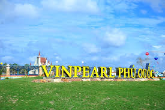

Danh lam thắng cảnh
Năm 2006, Khu dự trữ sinh quyển ven biển và biển đảo Kiên Giang bao gồm cả thành phố này được UNESCO công nhận là khu dự trữ sinh quyển thế giới.
Phú Quốc được xác định là trung tâm du lịch sinh thái và trung tâm giao thương tầm cỡ khu vực và quốc tế. Tại đây có nhiều thắng cảnh đẹp như:
- Vườn quốc gia Phú Quốc
- Khu bảo tồn biển Phú Quốc
-
An Thới
- Bãi Khem
- Nhà Lao Cây Dừa
- Mũi Ông Đội
- Bãi Vịnh Đầm
- Bãi Sao
-
Quần đảo An Thới
- Hòn Thơm
- Hòn Dừa
- Hòn Rỏi
- Hòn Đụn
- Hòn Gầm Ghì
-
Dương Đông
- Suối Đá Bàn
- Dinh Cậu
- Bãi Trường
- Rạch Tràm
- Rạch Vẹm
-
Bắc Đảo
- Bãi Thơm
- Gành Dầu
- Bãi Dài
-
Làng chài Hàm Ninh
- Bãi Vòng
- Suối Tranh
- Vinpearl Safari Phú Quốc (vườn thú bán hoang dã đầu tiên của Việt Nam)
- Công viên giải trí VinWonders Phú Quốc 50ha (Khu vui chơi lớn nhất Châu Á)
- Đảo sim (Sim Island Phú Quốc)
- Cáp treo Hòn Thơm
Bãi biển phía nam Phú Quốc
Vườn thú bán hoang dã Phú Quốc
Toàn cảnh Dinh Cậu
Công viên giải trí Vinpearl Land